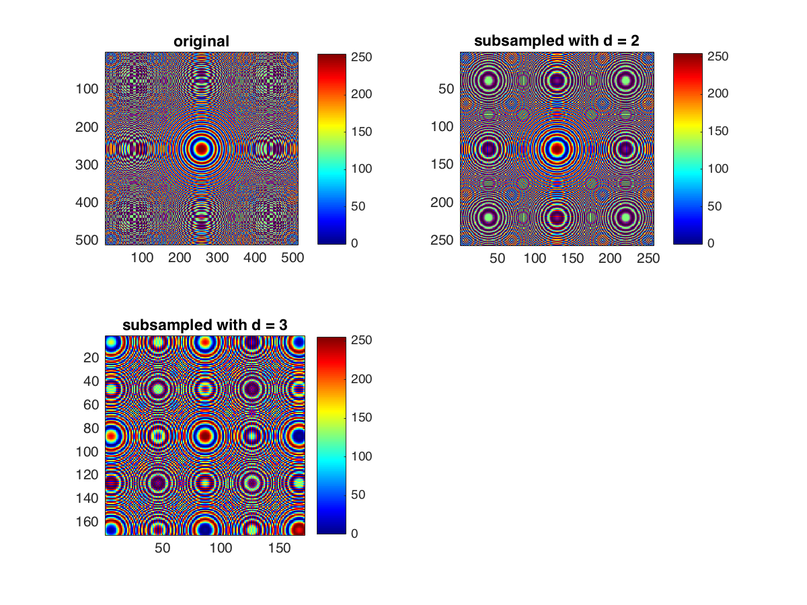
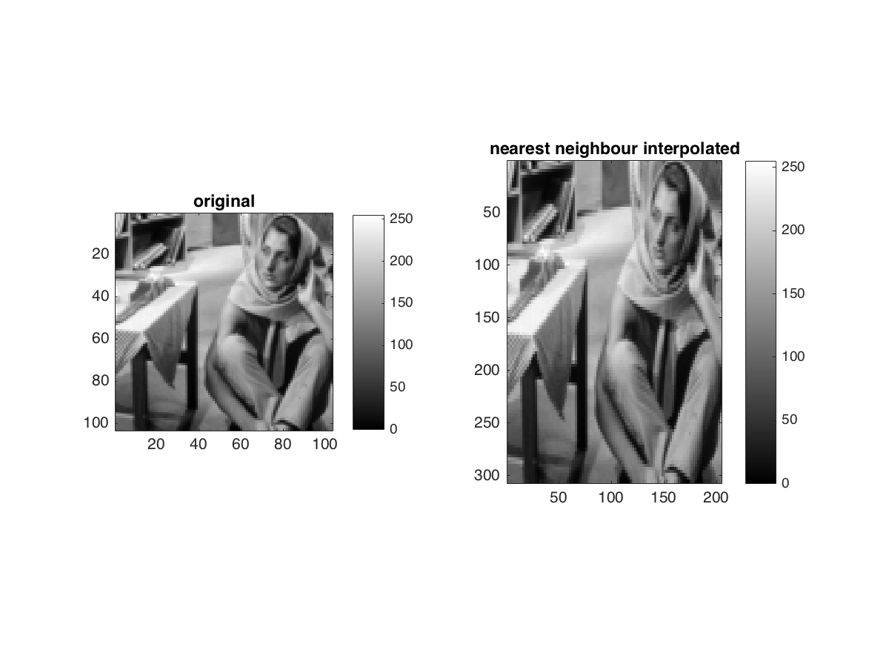

Contents
MyMainScript
myNumOfColors = 200;
myColorScale = [[0:1/(myNumOfColors-1):1]' , ...
[0:1/(myNumOfColors-1):1]' , [0:1/(myNumOfColors-1):1]'];
Q1.a - subsampling
tic;
circleImg = imread('../data/circles_concentric.png');
sub_d2 = myShrinkImageByFactorD(2, circleImg);
sub_d3 = myShrinkImageByFactorD(3, circleImg);
figure();
subplot(2, 2, 1);
imagesc(circleImg);
title('original');
colormap (myColorScale);
colormap jet;
daspect ([1 1 1]);
axis tight;
colorbar;
subplot(2, 2, 2);
imagesc(sub_d2);
title('subsampled with d = 2');
colormap (myColorScale);
colormap jet;
daspect ([1 1 1]);
axis tight;
colorbar;
subplot(2, 2, 3);
imagesc(sub_d3);
title('subsampled with d = 3');
colormap (myColorScale);
colormap jet;
daspect ([1 1 1]);
axis tight;
colorbar;
saveas(gcf, '../images/circles2.png');
disp('subsampled images saved as `circles.png` in images/');
toc;
subsampled images saved as `circles.png` in images/
Elapsed time is 1.540322 seconds.

Q1.b - bilinear interpolation
tic;
barbaraImg = imread('../data/barbaraSmall.png');
interpolated_img = myBilinearInterpolation(barbaraImg);
figure();
subplot(1, 2, 1);
imagesc(barbaraImg);
title('original');
colormap (myColorScale);
daspect ([1 1 1]);
axis tight;
colorbar;
subplot(1, 2, 2);
imagesc(interpolated_img);
title('bilinearly interpolated');
colormap (myColorScale);
daspect ([1 1 1]);
axis tight;
colorbar;
saveas(gcf, '../images/barbaraBLInterpolated.png');
disp('interpolated image saved as `barbaraInterpolated.png` in images/');
toc;
interpolated image saved as `barbaraInterpolated.png` in images/
Elapsed time is 1.300119 seconds.
Q1.c - Nearest neighbour interpolation
tic;
barbaraImg = imread('../data/barbaraSmall.png');
interpolated_img = myNearestNeighborInterpolation(barbaraImg);
figure();
subplot(1, 2, 1);
imagesc(barbaraImg);
title('original');
colormap (myColorScale);
daspect ([1 1 1]);
axis tight;
colorbar;
subplot(1, 2, 2);
imagesc(interpolated_img);
title('nearest neighbour interpolated');
colormap (myColorScale);
daspect ([1 1 1]);
axis tight;
colorbar;
saveas(gcf, '../images/barbaraNNInterpolated.png');
disp('interpolated image saved as `barbaraNNInterpolated.png` in images/');
toc;
interpolated image saved as `barbaraNNInterpolated.png` in images/
Elapsed time is 1.243060 seconds.
